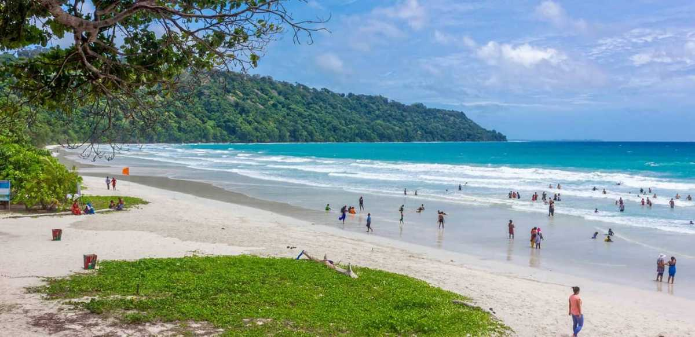
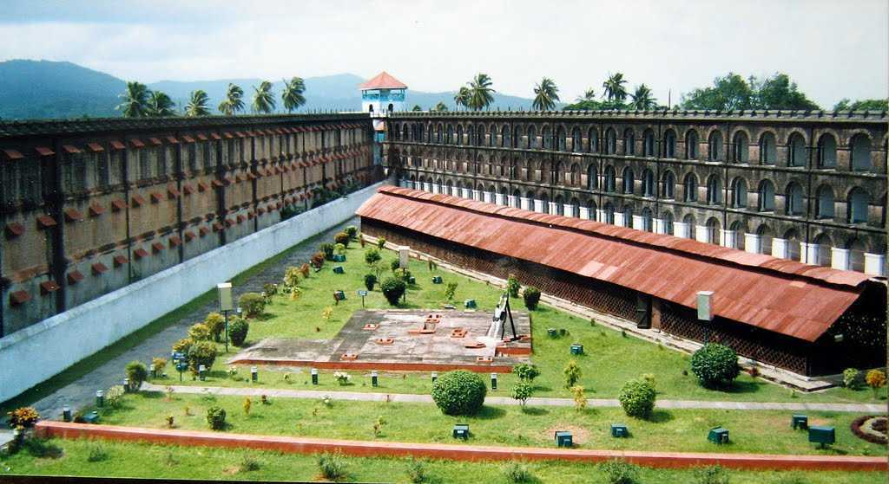
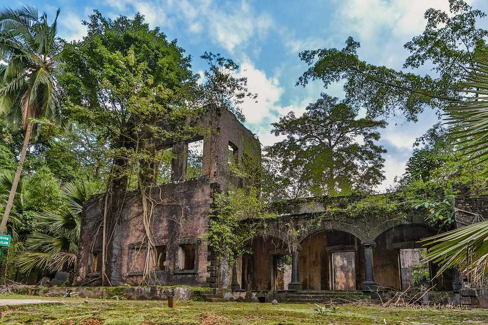
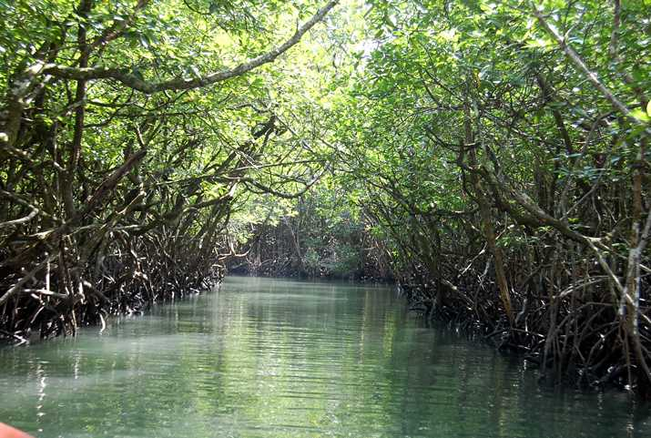
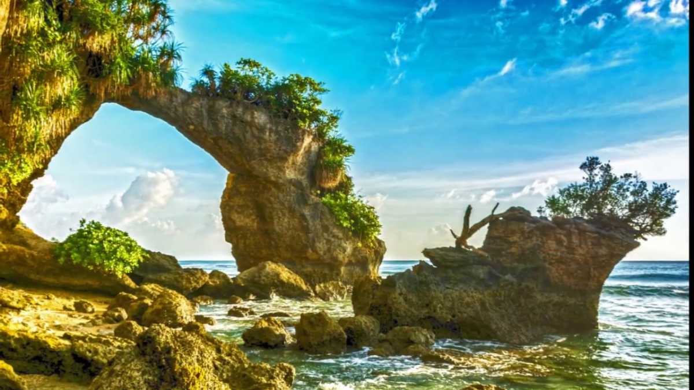

Andaman Nicobar

Radhanagar beach
Scuba diving and Snorkelling, Birdwatching, Sea walking, Parasailing, Swimming

Cellular Jail
Cellular Jail Light and Sound Show, Architecture of Cellular Jail, Cellular Jail Memorial.

Elephant Beach
Sea Walking, Relax at the Beach, Take a Boat Ride, Snorkelling, Scuba Diving

Ross Island
Explore the Ruins, Visit the Sanctuary, Experience the Ross Island Light and Sound Show, Japanese Bunker

Baratang Island
Limestone Caves and Mangrove Forests, Mud Volcanoes, Parrot Island, Baludera Beach

Laxmanpur Beach
Trek to Natural Bridge
Radhanagar Beach
Awarded with the title of 'Asia's Best Beach' by the TIMES magazine in 2004, Radhanagar Beach in Havelock Island with its turquoise blue waters and powdery white sands lives up to the moniker. Its vast shores of endless white grains stretch across 2 kilometres, making it a prime attraction of the Andaman and Nicobar Islands.
Cellular Jail
The Cellular Jail, also known as 'Kala Pani' is an old colonial prison situated in Port Blair, the capital of Andaman and Nicobar islands. Constructed by the Britishers during their colonial rule in India, the jail was used particularly to exile Indian political prisoners. It was used to house many notable freedom fighters such as Batukeshwar Dutt, Yogendra Shukla and Vinayak Damodar Savarkar.
Elephant Island
With its brilliant coral reefs and alluring cyan waters, the Elephant beach is one of the locations that add to the beach paradise reputation of the Andaman and Nicobar Islands. These waters are a prime destination for tourists wishing to engage in water sports like snorkelling, swimming, banana boat rides, speed boats and diving
Ross Island
Located just 17 kilometres east of Port Blair is Ross Island (now known as Netaji Subhash Bose Island); an island which was once the administrative headquarters of the British, but today is only an uninhabited island. Following an earthquake that hit Ross Island in the year 1941, the British left the island and shifted their settlement to Port Blair.
Baratang Island
Baratang Island, also known as Ranchiwalas Island, is a beautiful little island in the North and Middle Andaman Administrative district and is situated about 100 kilometres away from Port Blair by road. The island is well-known for its mangroves, mud volcanoes (only ones in India) and limestone caves. However, you may need to take permission from the Forest Department at Baratang to explore these caves.
Laxmanpur Beach
Located on Neil Island, Laxmanpur Beach is a long beach divided into two parts: Laxmanpur Beach I known for its mesmerising sunsets and Laxmanpur Beach II known for the two natural arch bridges or Howrah Bridge. The abundance of corals and marine life on the shores during the low tide is popular among visitors.